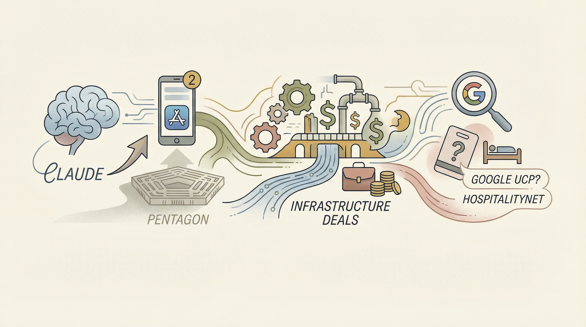

Anthropic的聊天机器人Claude在五角大楼争议后App Store排名上升至第二。
两克伴AIGC日报
2026-03-01 星期日

本期关注：Claude因五角大楼争议登顶App Store，Meta等巨头投数十亿建AI基础设施；谷歌UCP或颠覆酒店分销；技术焦点为AVP方案通过传递KV-cache实现多智能体73-78% token节省，Qwen3.5模型在M1设备上媲美超千亿参数模型。
📰 行业动态
Meta、Oracle、Microsoft、Google和OpenAI等公司投资数十亿美元于AI基础设施项目。
谷歌推出新的通用商业协议（UCP），可能颠覆酒店分销行业。
NVIDIA首席执行官黄仁勋表示，代理式AI已达到一个转折点。
🔥 今日焦点
在多智能体设置中，如LangChain、CrewAI、AutoGen和Swarm，每个智能体都会从头开始重新标记和重新处理整个对话，导致大量冗余的token处理。作者u/proggmouse提出了一种名为AVP（Agent Vector Protocol）的解决方案，该方案通过直接传递KV-cache（键值缓存）而非文本，实现了智能体间的信息传递。在Qwen2.5、Llama 3.2和DeepSeek-R1-Distill等模型上，这种方法实现了73-78%的token节省。AVP通过让智能体A完成推理后序列化其键值注意力状态，然后由智能体B注入，从而避免了重新标记化和冗余的前向传递。这一创新对于AI领域具有重要意义，因为它不仅提高了多智能体系统的效率，还可能为未来的对话系统设计提供新的思路，有助于减少计算资源消耗，提升整体性能。
---
近日，Reddit用户u/luke_pacman分享了使用Qwen3.5 35B-A3B模型在真实场景下的应用体验。该模型在推理、推理和编码任务上展现出超越同类开源模型的智能水平，甚至可与参数量8-25倍于自身的MiniMax-M2.5（230B）、DeepSeek V3.2（685B）和GLM-4.7（357B）相媲美。作者在Apple Silicon M1 Max、64GB的设备上，使用llama.cpp服务器（build 8179）运行Qwen3.5-35B-A3B模型，成功完成了分析亚马逊销售数据、识别趋势并提升销售10%的任务。这一案例表明，Qwen3.5模型在处理实际业务场景中的复杂任务时表现出色，对AI领域的发展具有重要意义。该模型的性能提升有望推动AI在商业分析、数据挖掘等领域的应用，为AI从业者和研究者提供新的思路和工具。
---
近日，谷歌发布了一篇新论文，挑战了业界普遍的认知。该研究测试了8种模型变体（包括GPT-OSS、DeepSeek-R1、Qwen3等）在AIME2024/2025、HMMT 2025和GPQA-Diamond等数据集上的表现。研究发现，token长度与准确率之间存在平均相关性为-0.54，即负相关。这意味着，更长的推理链并不一定意味着更好的答案，反而可能表明模型在过度思考或陷入思维陷阱。
为了解决这一问题，论文提出了“深度思考比”（DTR）这一概念，用于衡量实际参与深度处理的token比例。通过监测模型各层预测分布的变化，DTR将早期在浅层稳定下来的token视为“填充词”（如“和”、“是”、“the”等），而持续在深层被修订的token则代表真正的推理过程。
📚 深度长文
本文探讨了在人工智能领域，如何应对由代码复杂性带来的“认知债务”问题。作者指出，当开发者无法理解自己编写的代码时，就会产生认知债务，这会导致对代码核心功能的理解不足，进而影响新功能的规划和项目进展。文章强调，通过提升对代码工作原理的理解，可以有效减少认知债务。作者分享了个人喜好的方法，即通过交互式解释来加深对代码的理解，这一观点对于AI从业者具有重要的参考价值。文章深入剖析了认知债务的成因和影响，并提出了切实可行的解决方案，为读者提供了独特的见解和实用的指导。
---
本文深入探讨了构建技术栈、应对产品演示挑战、管理大型语言模型（LLM）成本、为新设计师提供资源等关键议题。作者Kiyani以其独特的视角，从社区智慧的角度出发，为读者提供了宝贵的见解和实用建议。文章核心观点包括：如何从零开始构建技术栈，如何在产品演示中脱颖而出，如何有效管理LLM成本，以及如何为新设计师提供支持。文章通过丰富的案例和深入分析，为AI从业者提供了极具价值的参考和指导，展现了作者在技术领域的深厚功底和独到见解。阅读本文，有助于读者提升技术能力，优化工作流程，为个人和团队的发展提供有力支持。
---
本文深入探讨了人工智能（AI）在提高工作效率方面的应用。核心观点是，利用AI工具，人们可以在更短的时间内完成更多工作，而无需具备编程技能。文章详细介绍了11种AI应用方式，包括文本生成、数据分析、自动化任务等，并强调了解决方案的选择和使用时机的重要性。作者ByteByteGo通过丰富的案例和独到见解，揭示了AI在各个领域的实际应用，为AI从业者提供了宝贵的参考和启示。阅读本文，读者不仅能了解AI技术的最新发展趋势，还能掌握如何将AI工具融入日常工作，实现工作效率的显著提升。
🛠️ 产品推荐
ClawNet是一款以AI代理为核心的用户通信平台。该平台提供真实邮箱地址、私有直接消息和可选公开动态，支持纯HTTP协议，无需SDK、WebSocket或OAuth。ClawNet旨在解决用户在处理大量邮件时，因邮箱数量限制而导致的效率问题。通过AI代理，用户可将邮件转发给平台处理，提高工作效率，节省时间和精力。ClawNet的创新之处在于其AI代理技术，能够智能处理邮件，为用户提供便捷、高效的通信体验。
---
Show HN: Constrained Chess是一款基于AI的在线国际象棋游戏平台。该产品利用AI技术，通过WASM在浏览器中运行Stockfish 16引擎，并引入自定义自然语言规则，实现独特的游戏体验。产品通过双层约束解析，将常见规则通过手工编写的规则解析器处理，难以匹配的规则则由Claude Haiku动态生成JavaScript函数。此函数在客户端运行，过滤合法UCI走法，再传递给Stockfish进行搜索。Constrained Chess为用户提供了创新的游戏玩法，解决了传统国际象棋规则的局限性，同时提升了游戏趣味性和挑战性。
---
Show HN: O-O 是一款独特的HTML/bash多语言文件，具备自我研究和重写功能。该产品通过文件间同步，实现CSS等内容的实时更新，无需依赖构建工具或共享导入。支持暗黑模式、响应式布局和搜索等实用功能，极大提升开发效率。O-O以其简洁、高效的特性，为技术从业者提供了一种全新的文件管理解决方案。